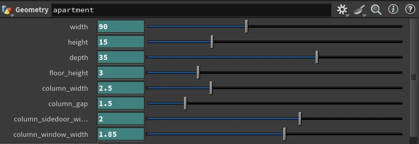
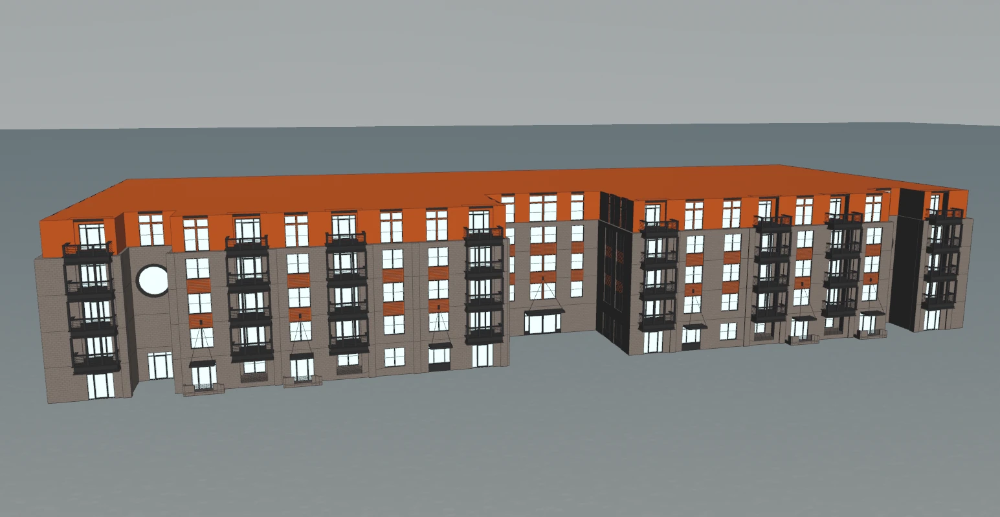
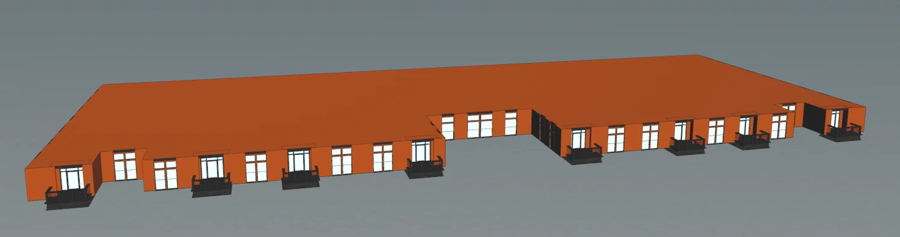
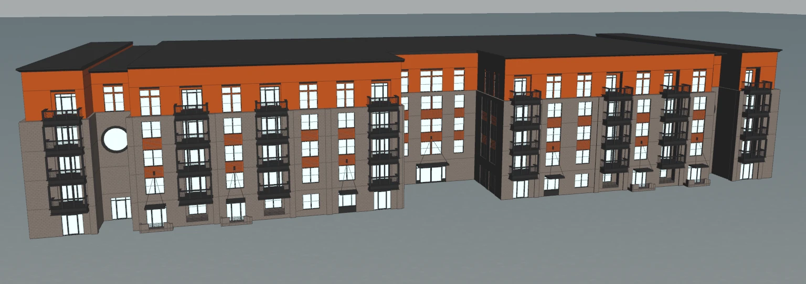

Case Study · April 2026
Procedural Building
A customizable apartment-building generator inspired by The Bowery in Savannah, with parameters for massing, floors, facade modules, roof details, and materials.
RoleProcedural Modeling
ToolsHoudini · Karma CPU
DateApril 2026
Artist-friendly building parameters
Width, height, depth, floor height, column spacing, window width, door width, and balcony height expose the major design decisions without requiring node-level edits.

One network, multiple floor types
A foreach loop stacks floors along the vertical axis. Iteration-aware expressions distinguish the ground, middle, and top floors inside one compact procedural network.

Rule-based facade assembly
Line, Delete, and Copy to Points workflows place windows, doors, and columns. Element counts respond automatically when the building dimensions change.

Attribute-driven assignment
Name attributes are embedded as components are created, converted into primitive groups after merging, and used for automatic material assignment. The final building contains roughly 47,000 primitives.
